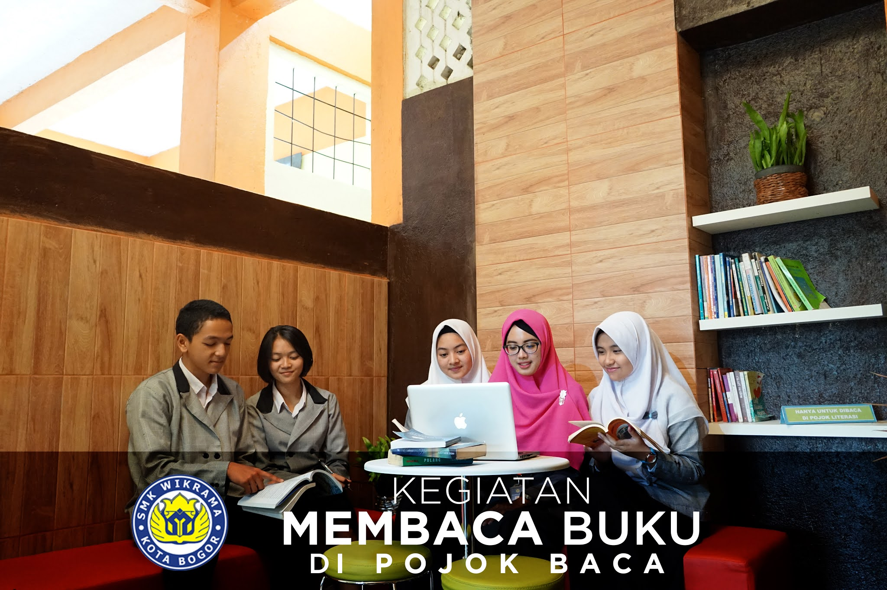
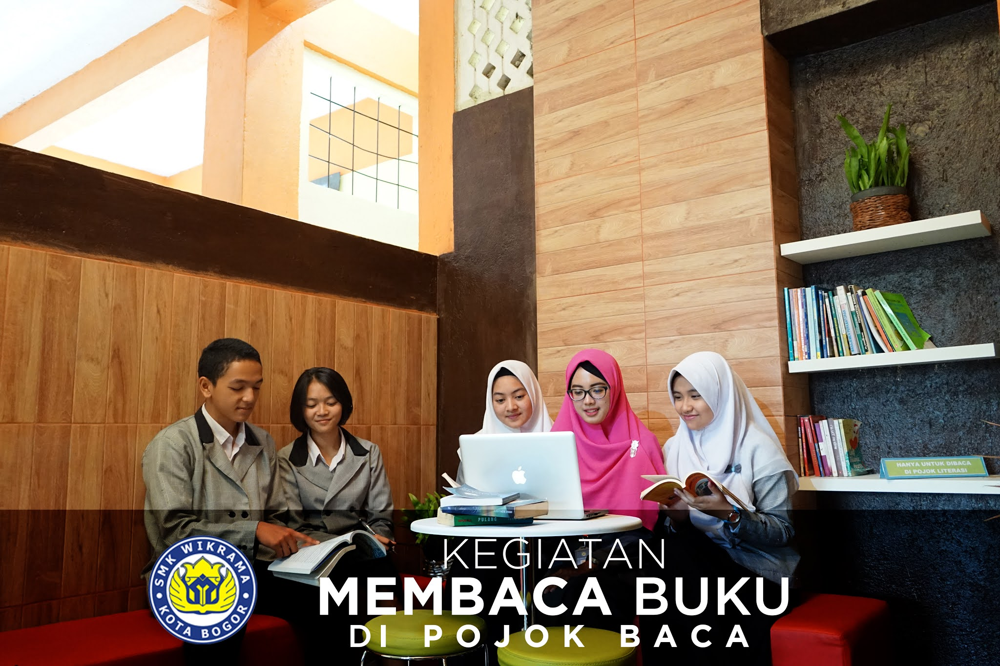

SENIN DAN KAMIS

SELASA

RABU

JUM'AT

KETENTUAN SEPATU PUTRA

KETENTUAN SEPATU PUTRI

KETENTUAN PEMASANGAN ATRIBUT SERAGAM SEKOALAH
 

Perpustakaan Wikrama
Perpustakaan SMK Wikrama Bogor berada di Kampus SMK Wikrama Bogor Kelurahan Sindangsari, Kecamatan Bogor Timur, Kota Bogor didirikan pada tahun 1996. Secara fisik perpustakaan sekolah terletak di lantai 2 (dua) gedung Pajajaran yang merupakan gedung pertama yang dibangun, tepatnya berada di area bangunan seluas 96 m2. Lokasi ini berada di pusat kegiatan pembelajaran yang mudah dijangkau oleh peserta didik, pendidik dan tenaga kependidikan. Semenjak didirikan, keberadaan ruang perpustakaan SMK Wikrama Bogor memberikan manfaat bagi sivitas akademik sekolah bahkan masyarakat sekitar sekolah
Visi
"Menjadi perpustakaan sekolah teladan berbasis Teknologi Informasi dan Komunikasi"
Misi
- Menjadikan perpustakaan sebagai sumber informasi bagi sivitas sekolah dan masyarakat
- Menjadikan budaya membaca sebagai bagian dari budaya sekolah
Motto
“Melayani dengan Hati dan Teknologi”
PERPUSTAKAAN ONLINE SMK WIKRAMA INDONESIA
SMK Wikrama juga mempunyai fasilitas Perpustakaan Online yang bisa diakses melalui
Dalam mendukung PJJ (Pembelajaran Jarak Jauh) dan New Normal, Perpustakaan SMK Wikrama Indonesia telah membuat fiture WikBook Wikrama Electronic Book. WikBook adalah sebuah aplikasi berbasis animasi flash yang memiliki konten lebih dari 600 judul ebook. Terdiri dari buku teks (buku pegangan siswa) fiksi & nonfiksi yang dapat diakses dan didownload melalui laman website yang di sedia kan di atas (LIBRARY ONLINE)